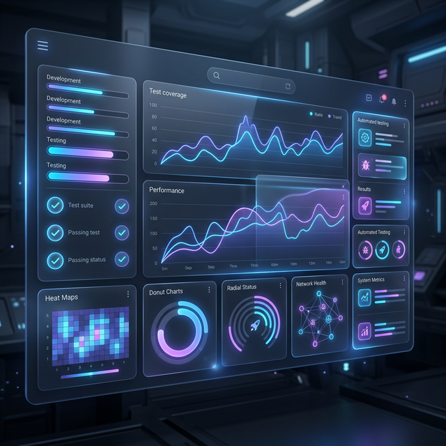
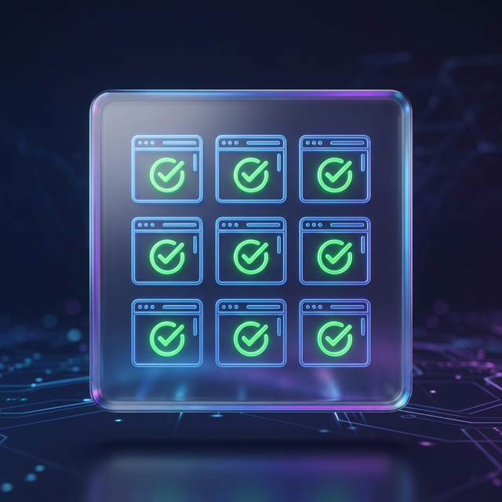
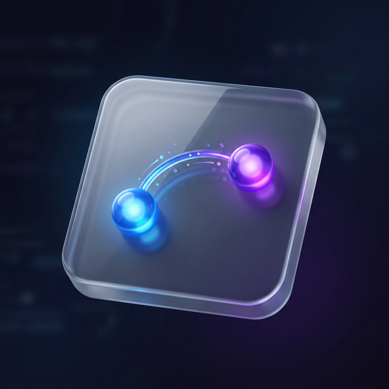
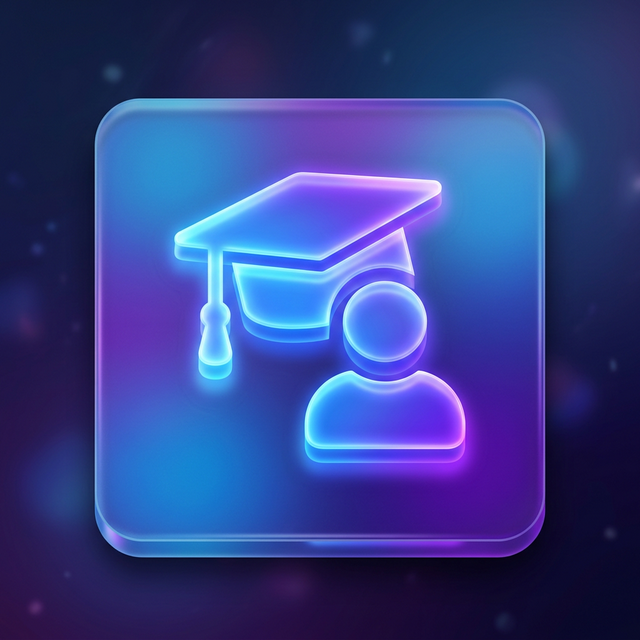

Quality Engineering
Redefined.
I don't just automate tests. I build testers.
Specializing in highly scalable CI/CD pipelines, resilient API testing, and parallel UI execution.


About Me
I am a Senior QA Automation Engineer and Lead Mentor. I build resilient testing infrastructure and empower the next generation of engineers.
With deep roots in QA automation and education, I’ve built testing pipelines, mentored dozens into automation roles, and led quality initiatives at massive organizations like Tokopedia, JULO, and Stickearn.
I recently completed my Master of Computer Science, leveraging time-series forecasting, DevOps tooling, and open-source infrastructure to drive data-backed quality decisions.
80+
QA Professionals Trained
95%
Manual to Auto Transition
5+
Years in Automation
Engineering Stack
Programming & Patterns
Quality Automation
Platform Engineering
Performance & Chaos
Security & Monitoring
Management & Data
Experience & Mentorship
QA Lead
GigRadar.io
Leading strategic automation initiatives, performance resilience, and architecting quality gates for robust delivery.
Senior QA Automation
JULO
Architected automated API methodologies and transitioned the internal manual QA team into automation engineers.
Mentor & Instructor
OK-IT, Alterra Academy, Superprof
Trained over 80 professionals, instructing courses on Web, Mobile, and API automation workflows.
Test Engineer
Tokopedia & Stickearn
Executed large-scale QA operations and championed squad-wide test pipeline integrations.
Open Source Case Studies
Deep dive into my public reference implementations.

Parallel Selenium Grid Framework
A highly scalable UI automation engine using Docker and Pytest-xdist. Features thread-safe Page Object Model and unified logging for cross-browser stability.
Explore Framework
Python API Automation Suite
Enterprise-ready API testing framework for Swager Petstore. Implements dynamic test data injection and comprehensive reporting via Allure.
View Documentation
SDET Mentorship Program
A comprehensive training curriculum designed to transition manual testers into automation engineers. Targeted at building core logic and framework architecture skills.
Learn MoreAcademic Background
Master of Computer Science
Universitas Budi Luhur
2023 – 2025Specialization in Machine Learning and Time-Series Forecasting.
Bachelor of Computer Science
Universitas Tarumanagara
2018 – 2022Core foundations in Software Engineering and Algorithms.
Elevate Your Quality Together
Whether you need to architect a new automation framework or mentor your team, let's build something resilient.